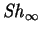
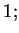
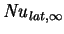
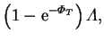
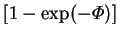
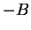
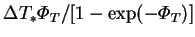
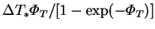

In the narrow cavity limit, the wall fluxes of vapour and sensible and latent
energy are:
|  |  | (6.2) | |
| (6.3) | |||
|  |  | (6.4) |
There is a striking similarity between these three fluxes: each being
the product of a specific capacity, a conductance, a driving force and
a mass transfer correction factor. The factor
 is
Spalding's driving force for mass transfer,  (see equation
6.1). These expressions are formally identical
to those arising from the `film theory' of simultaneous heat and mass
transfer between a bulk fluid and a surface developed by Colburn and
Drew (1937) and refined by Bird et al. (1960, ch. 21), except that there the conductances are unknown
functions of the flow field, considered to be the ratio of a
conductivity ( or
or  ) and the `film thickness'. Here, the
fictitious film thickness is simply the width of the air-space,
) and the `film thickness'. Here, the
fictitious film thickness is simply the width of the air-space,  .
It is interesting to note that the associated mass fraction
(4.24) and temperature (4.26) profiles
are also generally fictitious, but that here they are exactly
realized.
.
It is interesting to note that the associated mass fraction
(4.24) and temperature (4.26) profiles
are also generally fictitious, but that here they are exactly
realized.
This formal similarity suggests a means of extending the range of validity
of the analysis to cavities that are not narrow.
The film theory approximately separates the effects of the bulk
flow field and interfacial mass transfer. The former is lumped into the
conductances, or film thicknesses, while the latter is given by
corrections of the form
Rather than being continually
encumbered with the mass transfer rate correction factors, however, it
would seem to be much simpler to combine these into the driving forces;
i.e. for the vapour transport, to use  instead of Spalding's
instead of Spalding's
 , and for energy transport, to use
, instead of the temperature
difference,
, and for energy transport, to use
, instead of the temperature
difference,  . This is precisely what was done
in nondimensionalizing the vapour and energy fluxes in §2.3.1.
. This is precisely what was done
in nondimensionalizing the vapour and energy fluxes in §2.3.1.
The intended result is that the Sherwood and (sensible) Nusselt numbers
should be much less dependent on  . This was perfectly achieved in
the narrow cavity limit (§4.4.1).
. This was perfectly achieved in
the narrow cavity limit (§4.4.1).